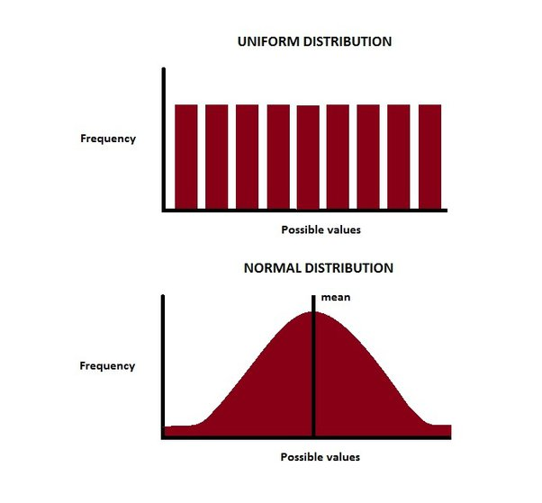

3 + 5
10/2
4^2
8 %/% 3
8 %% 3[1] 8
[1] 5
[1] 16
[1] 2
[1] 2Ctrl+Alt+I to insert new chunkFor starters, you can use R as a calculator:
3 + 5
10/2
4^2
8 %/% 3
8 %% 3[1] 8
[1] 5
[1] 16
[1] 2
[1] 2Some basic functions:
round(1.86)
sqrt(25)
log10(1000)[1] 2
[1] 5
[1] 3<-<<-=n <- 5c()print() or type nameclass(), typeof()as.x() family of functionsCreate your first variable:
n <- 9Let’s see it:
n
print(n)
class(n)[1] 9
[1] 9
[1] "numeric"As we said, every variable in R is a vector. So what does this mean?
Let’s add one more number to our variable n using function c():
n <- c(n, 16); n
class(n)[1] 9 16
[1] "numeric"How do functions work on this?
sqrt(n)[1] 3 4What happens when we try to add a letter?
n <- c(n, "z"); n
class(n)[1] "9" "16" "z"
[1] "character"Numeric vector:
n1 <- c(1,2,4); n1
as.character(n1)[1] 1 2 4
[1] "1" "2" "4"Create sequential numeric vector:
n2 <- 1:10; n2 [1] 1 2 3 4 5 6 7 8 9 10Character vector:
ch <- c("a", "b", "c", "d", "spanishinquisition"); ch[1] "a" "b" "c"
[4] "d" "spanishinquisition"TRUE FALSE
It is a binary variable.
bool <- c(T,F,T,T,F); bool[1] TRUE FALSE TRUE TRUE FALSEas.numeric(bool)[1] 1 0 1 1 0bin <- c(0,1,1,0,1); bin[1] 0 1 1 0 1class(bin)[1] "numeric"as.logical(bin)[1] FALSE TRUE TRUE FALSE TRUE&|!print(bool)[1] TRUE FALSE TRUE TRUE FALSEprint(bin)[1] 0 1 1 0 1& and | are vectorised
&& and || are short-circuited
bool & bin
bool && binbool | bin
bool || bin!bool
!bool || bin==
!=
>
>=
<
<=
n2 [1] 1 2 3 4 5 6 7 8 9 10n2 == 2 [1] FALSE TRUE FALSE FALSE FALSE FALSE FALSE FALSE FALSE FALSEn2 > 5 [1] FALSE FALSE FALSE FALSE FALSE TRUE TRUE TRUE TRUE TRUEn2 >= 5 [1] FALSE FALSE FALSE FALSE TRUE TRUE TRUE TRUE TRUE TRUEbool
bin[1] TRUE FALSE TRUE TRUE FALSE
[1] 0 1 1 0 1bool == bin[1] FALSE FALSE TRUE FALSE FALSEbool != bin[1] TRUE TRUE FALSE TRUE TRUEWhat happens when vectors are not the same length?
n1; n2[1] 1 2 4 [1] 1 2 3 4 5 6 7 8 9 10n2*c(2,3) [1] 2 6 6 12 10 18 14 24 18 30n2*n1Warning in n2 * n1: longer object length is not a multiple of shorter object
lengthn2 == n1Warning in n2 == n1: longer object length is not a multiple of shorter object
length [1] 1 4 12 4 10 24 7 16 36 10
[1] TRUE TRUE FALSE FALSE FALSE FALSE FALSE FALSE FALSE FALSElength() : how many elements in a vector
myvec <- 1:20
length(myvec)[1] 20length("banana")
nchar("banana")[1] 1
[1] 6which() : returns positions of elements which satisfy the condition
which(n1 == 4)
which((myvec<=2) | (myvec>17))[1] 3
[1] 1 2 18 19 20names() : gives names to the elements
names(ch) <- c("letter", "letter", "letter", "anotherletter", "nobodyexpected")
ch letter letter letter
"a" "b" "c"
anotherletter nobodyexpected
"d" "spanishinquisition" %in% operator - are elements of the first vector present in the second vector?
n2 %in% n1 [1] TRUE TRUE FALSE TRUE FALSE FALSE FALSE FALSE FALSE FALSEunique() : returns unique elements
n3 <- c(0,0,0,0,1,1,1,2,2,2,2,2,3,3,3,3,5)
unique(n3)[1] 0 1 2 3 5duplicated() : logical: did the same element appear before in the vector?
duplicated(n3)
duplicated(c(5, n3)) [1] FALSE TRUE TRUE TRUE FALSE TRUE TRUE FALSE TRUE TRUE TRUE TRUE
[13] FALSE TRUE TRUE TRUE FALSE
[1] FALSE FALSE TRUE TRUE TRUE FALSE TRUE TRUE FALSE TRUE TRUE TRUE
[13] TRUE FALSE TRUE TRUE TRUE TRUEtable() : how many times does each unique element appear
table(n3)n3
0 1 2 3 5
4 3 5 4 1 Get just the frequencies from table:
n3
as.numeric(table(n3)) [1] 0 0 0 0 1 1 1 2 2 2 2 2 3 3 3 3 5
[1] 4 3 5 4 1Get unique elements using names - but be careful!
names(table(n3))
class(names(table(n3)))[1] "0" "1" "2" "3" "5"
[1] "character"sample() : take a sample from vector
sample(n3, 4)
sample(n3, 25, replace=TRUE)[1] 3 0 2 3
[1] 0 0 1 3 3 2 0 3 0 0 2 1 3 2 2 1 5 1 0 1 2 1 1 0 5

sample(1:100, size = 10)
runif(10, min=1, max=100)
s <- rnorm(20, mean=3, sd=0.7); s [1] 38 98 89 71 50 41 54 80 66 14
[1] 99.754202 83.672139 1.016067 96.551918 10.399756 89.002207 1.331432
[8] 55.335312 84.356069 46.269203
[1] 3.457046 2.712376 3.443761 3.836517 2.261114 3.905203 3.130157 3.898692
[9] 2.329461 3.832170 2.264856 2.365421 2.773962 2.258093 2.385769 3.500020
[17] 3.296709 2.200911 4.542014 3.584979seq()
seq(from=1, to=100, by=2)
seq(from=0, to=10, length.out=21) [1] 1 3 5 7 9 11 13 15 17 19 21 23 25 27 29 31 33 35 37 39 41 43 45 47 49
[26] 51 53 55 57 59 61 63 65 67 69 71 73 75 77 79 81 83 85 87 89 91 93 95 97 99
[1] 0.0 0.5 1.0 1.5 2.0 2.5 3.0 3.5 4.0 4.5 5.0 5.5 6.0 6.5 7.0
[16] 7.5 8.0 8.5 9.0 9.5 10.0rep()
rep(1:3, times=4)
rep(1:3, each=4) [1] 1 2 3 1 2 3 1 2 3 1 2 3
[1] 1 1 1 1 2 2 2 2 3 3 3 3don’t mix up rep() and replicate()!
replicate(n = 10, expr = mean(sample(x = 1:10, size = 3)) ) [1] 6.333333 7.000000 5.333333 6.666667 8.666667 4.666667 4.666667 5.000000
[9] 4.666667 4.666667mean(s)[1] 3.098961sd(s)[1] 0.7234068quantile(s) 0% 25% 50% 75% 100%
2.200911 2.356431 3.213433 3.646777 4.542014 One position:
n1[3] [1] 4Multiple positions:
n2[1:5]
ch[c(2,4,5)][1] 1 2 3 4 5
letter anotherletter nobodyexpected
"b" "d" "spanishinquisition" Everything except 1 position:
n2[-7][1] 1 2 3 4 5 6 8 9 10Positions stored in another vector:
n2[n1][1] 1 2 4n2
n2 > 5
n2[n2 > 5] [1] 1 2 3 4 5 6 7 8 9 10
[1] FALSE FALSE FALSE FALSE FALSE TRUE TRUE TRUE TRUE TRUE
[1] 6 7 8 9 10bin
n2[bin]
n2[as.logical(bin)][1] 0 1 1 0 1
[1] 1 1 1
[1] 2 3 5 7 8 10Create a vector myvec which contains all numbers from 1 to 20 except 3 and 6. Subset fifth and fourth number by position.
Subset myvec to get only numbers smaller or equal to 2 or larger than 17. Return first the numbers, then their positions in the original vector.
Subset myvec to return only elements which are in positions divisible by 3.
Return words from vector ch which have more than 5 letters.
- vectors
- factors = vectors with (unchangeable) levels
- matrices = dataframes with 1 type of data
- lists
- data frames = pretty lists Vectors with predefined levels.
Usual suspects for your errors.
fac <- factor(n3); fac [1] 0 0 0 0 1 1 1 2 2 2 2 2 3 3 3 3 5
Levels: 0 1 2 3 5fac[1] <- 6Warning in `[<-.factor`(`*tmp*`, 1, value = 6): invalid factor level, NA
generatedfac [1] <NA> 0 0 0 1 1 1 2 2 2 2 2 3 3 3
[16] 3 5
Levels: 0 1 2 3 5So how to turn a factor into normal numeric vector? There’s a hack.
as.numeric(fac)
as.numeric(as.character(fac)) [1] NA 1 1 1 2 2 2 3 3 3 3 3 4 4 4 4 5
[1] NA 0 0 0 1 1 1 2 2 2 2 2 3 3 3 3 5m <- matrix(1:15, nrow=5, ncol=3); m [,1] [,2] [,3]
[1,] 1 6 11
[2,] 2 7 12
[3,] 3 8 13
[4,] 4 9 14
[5,] 5 10 15Subsetting:
m[1,3]
m[12]
m[,2][1] 11
[1] 12
[1] 6 7 8 9 10Basic functions:
t(m) # transpose
diag(m) # extract diagonal
dim(m) # see dimensions [,1] [,2] [,3] [,4] [,5]
[1,] 1 2 3 4 5
[2,] 6 7 8 9 10
[3,] 11 12 13 14 15
[1] 1 7 13
[1] 5 3Make a 4x4 matrix m2 with numbers from 1 to 16. Let the first row be: 1 2 3 4 (hint: consult help with ?matrix).
Change all the numbers on the diagonal to zeroes.
Sum the elements in each row.
Store anything; most flexible data type.
l <- list(n2, bool, m, fac); l[[1]]
[1] 1 2 3 4 5 6 7 8 9 10
[[2]]
[1] TRUE FALSE TRUE TRUE FALSE
[[3]]
[,1] [,2] [,3]
[1,] 1 6 11
[2,] 2 7 12
[3,] 3 8 13
[4,] 4 9 14
[5,] 5 10 15
[[4]]
[1] <NA> 0 0 0 1 1 1 2 2 2 2 2 3 3 3
[16] 3 5
Levels: 0 1 2 3 5Let’s name the entries:
names(l) <- c("vector1", "vector2", "matrix1", "factor1")How many entries?
length(l)[1] 4How about dimensions?
dim(l)NULLBy position:
l[2]
class(l[2])$vector2
[1] TRUE FALSE TRUE TRUE FALSE
[1] "list"By position, another way:
l[[4]]
class(l[[4]]) [1] <NA> 0 0 0 1 1 1 2 2 2 2 2 3 3 3
[16] 3 5
Levels: 0 1 2 3 5
[1] "factor"By name:
l$vector2
class(l$vector2)
l[["factor1"]][1] TRUE FALSE TRUE TRUE FALSE
[1] "logical"
[1] <NA> 0 0 0 1 1 1 2 2 2 2 2 3 3 3
[16] 3 5
Levels: 0 1 2 3 5Subset an element of an element:
unlist(l[2])vector21 vector22 vector23 vector24 vector25
TRUE FALSE TRUE TRUE FALSE class(unlist(l[2]))[1] "logical"l[3]$matrix1
[,1] [,2] [,3]
[1,] 1 6 11
[2,] 2 7 12
[3,] 3 8 13
[4,] 4 9 14
[5,] 5 10 15l[[3]][2,3][1] 12#l[3][2,3]“Matrices” with different types of data.
df <- data.frame(m, ch); df X1 X2 X3 ch
1 1 6 11 a
2 2 7 12 b
3 3 8 13 c
4 4 9 14 d
5 5 10 15 spanishinquisitiondim(df)[1] 5 4ncol(df); nrow(df)[1] 4[1] 5colnames(df); rownames(df)[1] "X1" "X2" "X3" "ch"[1] "1" "2" "3" "4" "5"By position:
df[2, 3]
df[, 3:4][1] 12
X3 ch
1 11 a
2 12 b
3 13 c
4 14 d
5 15 spanishinquisitionBy names:
df["ch"]
df$ch
class(df["ch"])
class(df$ch) ch
1 a
2 b
3 c
4 d
5 spanishinquisition
[1] "a" "b" "c"
[4] "d" "spanishinquisition"
[1] "data.frame"
[1] "character"Internally, data frames are lists with entries of equal lengths.
Adding a column:
df <- cbind(df, bool); df X1 X2 X3 ch bool
1 1 6 11 a TRUE
2 2 7 12 b FALSE
3 3 8 13 c TRUE
4 4 9 14 d TRUE
5 5 10 15 spanishinquisition FALSERemoving a column:
df["bool"] <- NULL; df X1 X2 X3 ch
1 1 6 11 a
2 2 7 12 b
3 3 8 13 c
4 4 9 14 d
5 5 10 15 spanishinquisitionRemoving a row:
#df[5, ] <- NULL; df
df <- df[-5, ]R has a number of pre-loaded datasets, iris probably being the most famous one.
Load iris and calculate mean length of sepal.
Pseudocode is a way of writing down what a program should do, step by step, using simple language before we write the actual code.
Think of pseudocode like a recipe:
START → What are we trying to do?
INPUT → What data do we need?
PROCESS → What do we do with the data?
OUTPUT → What result do we want?
END → The task is finished.
NOT the same as prompt engineering!
Prompt engineering tells an AI how you want it to help you solve a problem. Basically, how you talk to ChatGPT.
Example:
a) Code
# Select 6 random rows from iris
random_rows <- sample(1:nrow(iris), 6)
# Extract values from Sepal.Width and Petal.Length
result <- iris[random_rows, c("Sepal.Width", "Petal.Length")]
# Display the result
print(result) Sepal.Width Petal.Length
114 2.5 5.0
74 2.8 4.7
57 3.3 4.7
11 3.7 1.5
118 3.8 6.7
139 3.0 4.8b) Pseudocode
START
Select 6 random rows from the iris data frame
Extract the values from the columns: Sepal.Width, Petal.Length
Store the selected values in a new result
Display the result
END
c) Prompt engineering
“Write me an R code for selecting 6 random rows from iris data frame, and saving the values from columns Sepal.Width and Petal.Length in a new variable called result. Use only base R functions. Display the result in the end.”
Pseudocode = thinking about the steps (planning your code)
Code = writing those steps in a programming language
Prompt engineering = telling an AI very specifically what you want it to do
Once again: DO NOT USE AI FOR SOLVING HOMEWORKS! It is very obvious when you do, you will lose points and you won’t be able to solve the final exam which will be written offline.